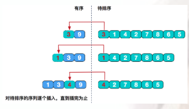
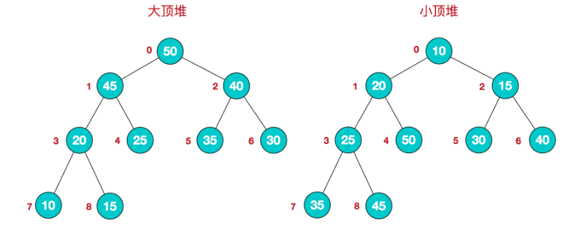
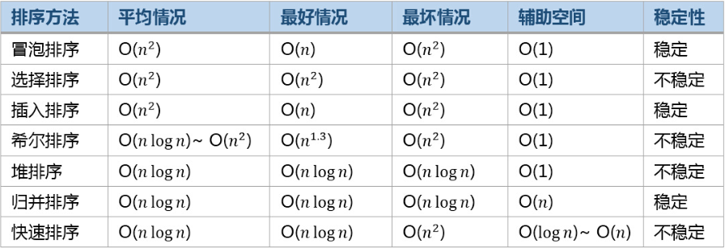

插入排序
原理
算法原理：从整个待排序列中选出一个元素插入到已经有序的子序列中去，得到一个有序的、元素加一的子序列，直到整个序列的待插入元素为0，则整个序列全部有序。
具体的实现的时候，我们一般选择第一个元素作为有序的序列，将后面的元素插入到前面有序的序列直到整个序列有序。
时间复杂度：插入排序在最好情况下，需要比较n-1次，无需交换元素，时间复杂度为O(n);在最坏情况下，时间复杂度为O(n^2)

代码实现
1 |
|
选择排序
原理
算法原理：为每一趟从待排序的数据元素中选择最小（或最大）的一个元素作为首元素，直到所有元素排完为止
算法步骤：
- 首先在未排序序列中找到最小（大）元素，存放到排序序列的起始位置
- 再从剩余未排序元素中继续寻找最小（大）元素，然后放到已排序序列的末尾。
- 重复第二步，直到所有元素均排序完毕。
时间复杂度：无论数组原始排列如何，比较次数是不变的；对于交换操作，在最好情况下也就是数组完全有序的时候，无需任何交换移动，
在最差情况下，也就是数组倒序的时候，交换次数为n-1次。综合下来，时间复杂度为O(n^2)
代码实现
1 |
|
冒泡排序
原理
算法原理：比较相邻的元素。如果第一个比第二个大，就交换他们两个
对每一对相邻元素作同样的工作，从开始第一对到结尾的最后一对。这步做完后，最后的元素会是最大的数。
针对所有的元素重复以上的步骤，除了最后一个。持续每次对越来越少的元素重复上面的步骤，直到没有任何一对数字需要比较。
时间复杂度分析：最优时间O(n），最差时间O(n^2)。
代码实现
1 |
|
归并排序
原理
算法原理：是利用递归与分治的技术将数据序列划分为越来越小的半子表，再对半子表排序，最后再用递归方法将排好序的半子表合并成越来越大的有序序列。
时间复杂度：O(nlogn）
代码实现
1 |
|
快速排序
原理
通过一轮的排序将序列分割成独立的两部分，其中一部分序列的关键字（这里主要用值来表示）均比另一部分关键字小。继续递归的对长度较短的序列进行同样的分割，最后到达整体有序。为了实现一次划分，我们可以从数组（假定数据是存在数组中）的两端移动下标，必要时交换记录，直到数组两端的下标相遇为止。为此，我们附设两个指针（下角标）i和j， 通过j 从当前序列的有段向左扫描，越过不小于基准值的记录。当遇到小于基准值的记录时，扫描停止。通过i从当前序列的左端向右扫描，越过小于基准值的记录。当遇到不小于基准值的记录时，扫描停止。交换两个方向扫描停止的记录 a[j] 与 a[i]。 然后，继续扫描，直至 i 与j 相遇为止。它的平均时间复杂度为O(nlogn)。
当我们每次进行分区划分时，如果每次选择的基准元素都是当前序列中最大或最小的记录，这样每次分区的时候只得到了一个新分区，另一个分区为空，并且新分区只是比分区前少一个元素，这是快速排序的最坏情况，时间复杂度上升为O(n^2)。
代码实现
1 |
|
堆排序
原理
利用堆这种数据结构而设计的一种排序算法，堆排序是一种选择排序，它的最坏，最好，平均时间复杂度均为O(nlogn)，它也是不稳定排序。

该数组从逻辑上讲就是一个堆结构，我们用简单的公式来描述一下堆的定义就是：
大顶堆：arr[i] >= arr[2i+1] && arr[i] >= arr[2i+2]
小顶堆：arr[i] <= arr[2i+1] && arr[i] <= arr[2i+2]
算法步骤：
- 将无需序列构建成一个堆，根据升序降序需求选择大顶堆或小顶堆;
- 将堆顶元素与末尾元素交换，将最大元素”沉”到数组末端;
- 重新调整结构，使其满足堆定义，然后继续交换堆顶元素与当前末尾元素，反复执行调整+交换步骤，直到整个序列有序。
代码实现
1 | package sortdemo; |
几种排序算法的比较示意图
